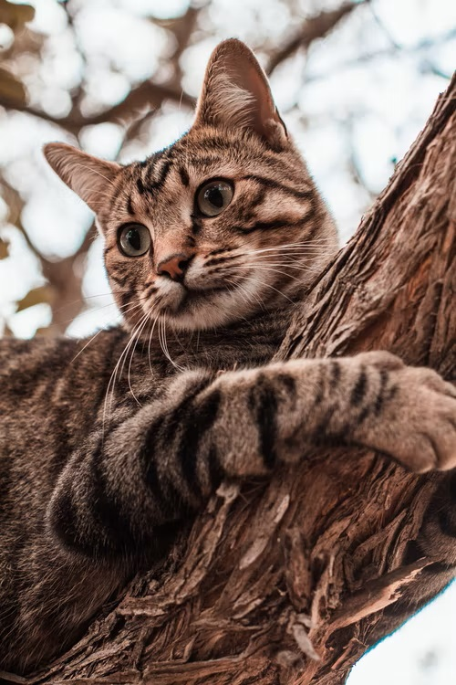

This is a Tabby Cat Fan PageTabbies Are Affectionate and Intelligent These unique creatures are incredibly affectionate and intelligent. They love cuddles and a whole lot of attention. However, tabbies can get pretty cranky if they don't get their way; since as a rule they are very bright, they usually end up getting what they want. |  |